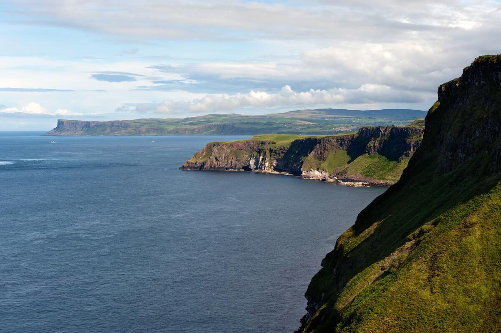
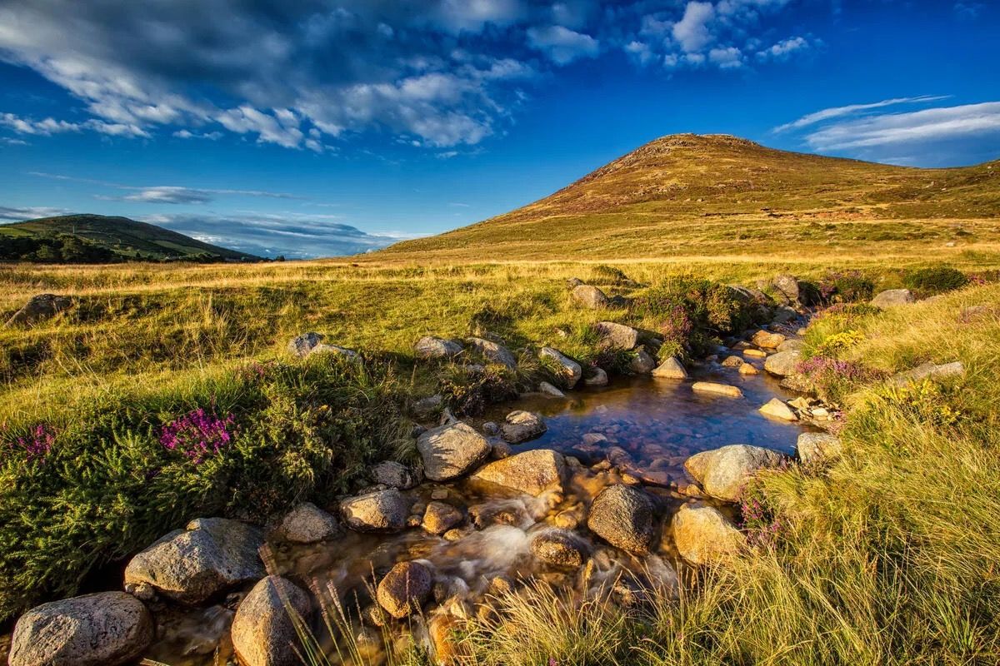

Walking Holiday Destinations
8 iconic walking routes across Ireland. Self-guided, with luggage transfers and handpicked B&Bs.
Wild Atlantic Way
Ireland’s west coast is raw, dramatic, and endlessly varied.
Walk the Kerry Way through towering mountain passes and quiet sheep farms. Stride the Dingle Peninsula along clifftops with nothing ahead but the Atlantic. Explore the Beara Peninsula — less-visited, more wild, and unforgettable.
Further north, the Burren offers something completely different: a pale limestone plateau scattered with ancient dolmens and rare wildflowers. Connemara brings bogland, glittering loughs, and the Twelve Bens rising sharply from the valley floor. Donegal closes the chapter with sea stacks, empty beaches, and the highest sea cliffs in Ireland.
This is Ireland at its most elemental.

The Dingle Way
The westernmost loop in Ireland — 179km around the Dingle Peninsula where ancient stone churches meet Atlantic cliffs, t...

The Kerry Way
Ireland's longest waymarked trail — 215km around the Iveragh Peninsula, through Killarney National Park, over Atlantic h...

The Burren and Cliffs of Moher
Europe's most unusual karst landscape — Arctic-Alpine and Mediterranean wildflowers blooming on 340-million-year-old lim...
Ireland's Ancient East
History runs deep here — and so do the trails.
The Barrow Way follows one of Ireland’s oldest rivers through lush farmland, medieval villages, and canal-side towpaths. It’s gentle, green, and deeply restorative.
The Wicklow Way climbs into the Wicklow Mountains — Ireland’s largest upland area — and passes through wild moorland, ancient monastic ruins at Glendalough, and sweeping valley views. It’s the country’s oldest long-distance trail, and it earns that reputation.
To the north, the Cooley and Mourne Mountains bring legends to life. Walk ridge trails above Carlingford Lough where Celtic mythology and granite peaks meet in equal measure.

The Wicklow Mountains
Ireland's first long-distance trail: 127km through granite mountains, glacial valleys and ancient monasteries, crossing ...

The Barrow Way
Ireland's easiest long-distance trail — 114km of riverside walking along towpaths and quiet roads from the Grand Canal t...

The Cooley & Mourne Mountains
Two granite mountain ranges separated by Carlingford Lough and connected by a ferry crossing — where the Cooley Mountain...
Northern Ireland
Northern Ireland surprises almost everyone who walks it.
The Antrim Glens roll down to the sea in broad green folds, each one quieter and more beautiful than the last. At the coast, the Giant’s Causeway stops you in your tracks — 40,000 hexagonal basalt columns stepping into the sea like something from a geological fever dream.
The Causeway Coast Way strings it all together: clifftop paths, rope bridges, and sweeping ocean views across to Scotland on a clear day.
Inland, the Sperrin Mountains offer wide open moorland, ancient standing stones, and almost total solitude. This is Northern Ireland for walkers who want to get properly off the beaten track.

The Causeway Coast
A volcanic landscape like nowhere else in Europe — 53km of basalt cliffs, ancient legends and whiskey-making tradition a...

The Causeway Coast & Glens of Antrim
The complete Northern Ireland coastal experience — 100km of basalt cliffs and UNESCO World Heritage coastline in the wes...
Not Sure Where to Walk?
We'll help you pick the perfect destination based on your fitness level, interests, and available time. Every tour includes accommodation, luggage transfers, and 24/7 local support.
Family-run since 2012 · Best Price Promise · 24/7 Local Support